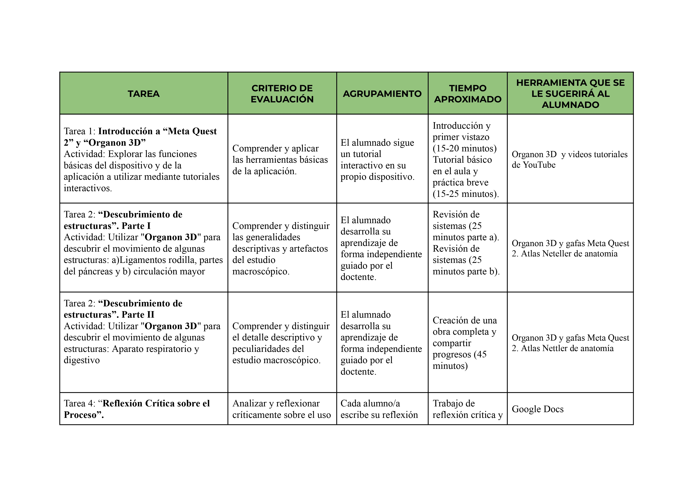
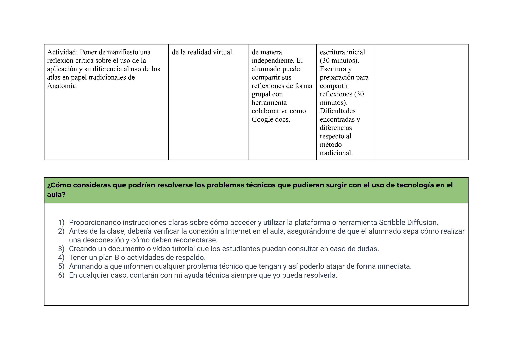

Relación entre Elementos Curriculares
Relación establecida entre los diferentes elementos curriculares y las tareas que componen la presente Situación de Aprendizaje Explorando el cuerpo humano a través de Organon:
Relación establecida entre los diferentes elementos curriculares y las tareas que componen la presente Situación de Aprendizaje Explorando el cuerpo humano a través de Organon:


Obra publicada con Licencia Creative Commons Reconocimiento Compartir igual 4.0